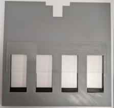

operanthouseのヘッダー
Kitaya lab
IR Sensor Bar
Note: Add additional operation monitor before this procedure.
If the holes of the touchscreen mask are vertical and close together or holes are arranged in two rows like the picture below, it may be difficult to discriminate which hole the mouse has nose-poked. One solution is covering the holes to reduce the height of the holes with a clear plastic plate.

However, if you don't want to change the shape of holes, you should use infrared sensor bar (NNAMC3460PCEV; Neonode) to determine exactly which place the mouse has nose-poked. This sensor bar is designed to turn laptop monitor into a touchscreen and OperantHouse program calculates the coordination of mouse's nose poking by tracking the position of mouse cursor.
Install
Cover the holes for the lever modules with the covers.

Hook the bottom and secure with M3x20mm screws.

The IR sensor bar requires the operation monitor. Install it according to the Addition of operation monitor.
Next, attach the sensor bar with double-sided tape. This sensor is very fragile so never bend it.
Do not apply force to the circled connector because this part is very fragile.

Print the parts for the sensor bar on the Parts printing page.
Attach the 3.5mm monitor spacer with double-sided tape and install the touch monitor. Readjust the monitor holders to make the monitor vertical.

Attach the spacer to the right side of the chamber with double-sided tape. In the photo, a 10-hole mask (Mask10holesAirBar_230328.stl) is used for testing.

(If you will perform a task like 5CSRTT in which the distance between the mask and the monitor should be close, omit the ChamberSpacer2mm and use the 1.5mm monitor spacer instead of the 3.5mm monitor spacer)
Assemble a background plate arm for the infrared sensor bar with M2 screws and nuts.

If you haven't printed them with black filament, stretch matte black tape over the plates.

Secure the arm with M2 screws and nuts.

If you want to reattach the sensor bar, remove it by inserting a razor or box cutter.

Connect the sensor bar and Raspi with microB - TypeA USB cable.
 (microB)
(microB)Assign "1" to the "TouchDetectSensorType" variable to detect touch position using the mouse cursor.

Next step is an adjusting. Run the OperantHouse program. When you touch the screen, an orange dot will appear. This shows an assumed coordinates where you touched. If this dot appears in a wrong place, you need to adjust it.

Open the Setting in the Main window. You can change offsets of the dot by changing the values of TouchOffset_X/Y. If the movement of the dot is too small or too large for your finger movement, change the value of TouchRatio_X/Y. Adjust these values until the dot follows your finger.

It's OK if it looks like this.

Set chamber and other stuffs.

The sensor bar makes a sensing field on the left of it so make sure nothing is touching on that filed including cables.

If the infrared sensor bar produces false detections when the chamber is attached, it may be due to the sensor bar being tilted. To prevent this, adjust the position of the monitor so that the left side of the sensor bar is pressed by the chamber, as shown in the figure below.
If the chamber’s lock ring is too loose and cannot press the chamber firmly against the sensor bar, wrap some tape around the lock ring to increase its thickness, as shown in the photo.


（Top view illustration）
If the touch is correctly detected when the chamber is set, the setup is complete.
Put the mouse in and try to see if it can detect the mouse's nose poke.